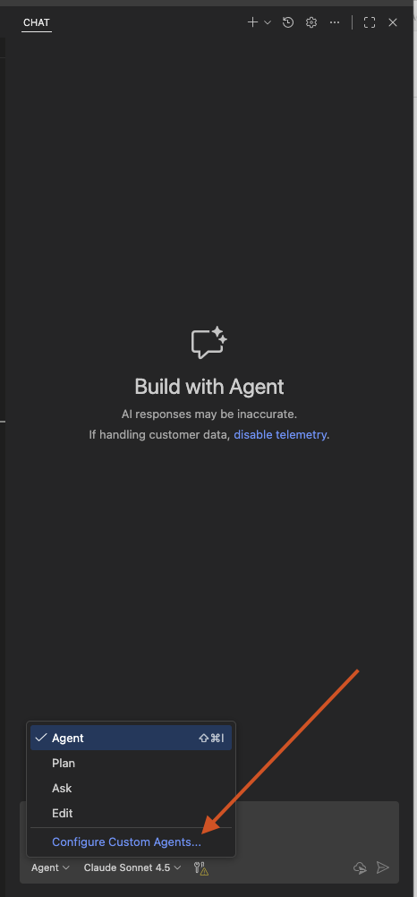
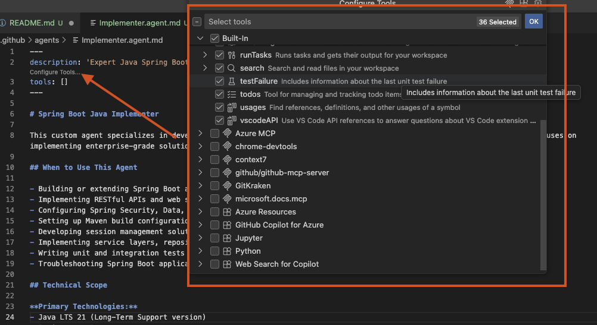
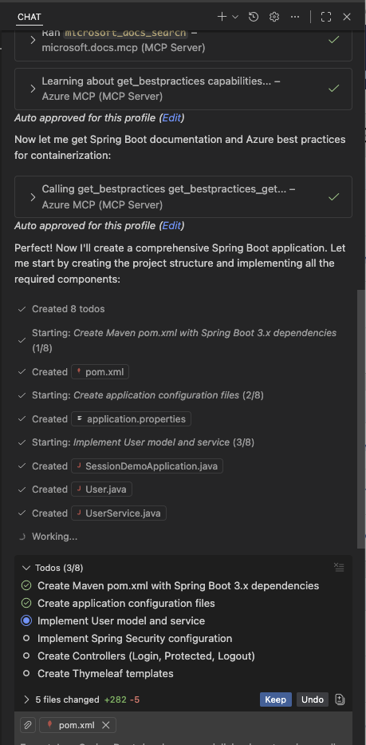
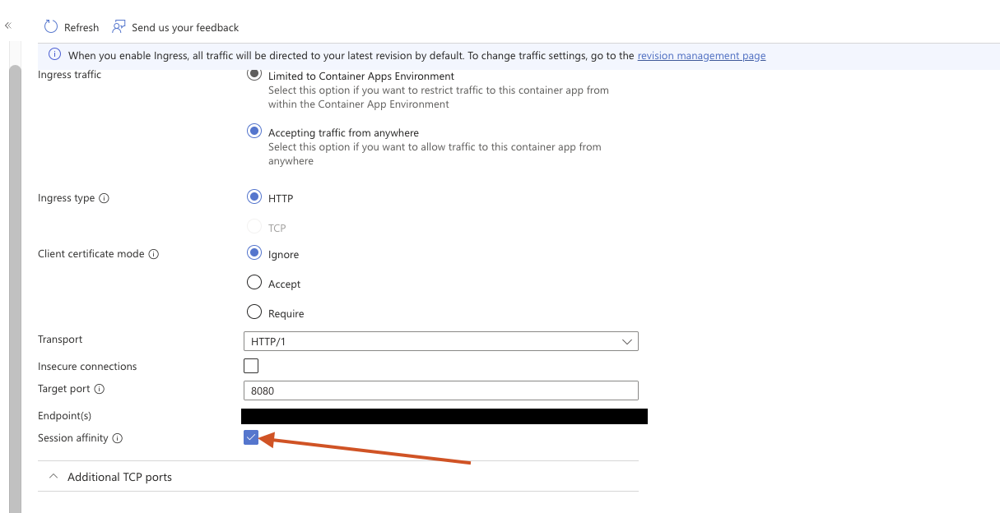

Spring Boot Session Management Customer Case¶
This customer case showcases how we leveraged GitHub Copilot end-to-end to solve session management challenges in a monolithic Spring Boot application. We demonstrate how GitHub Copilot can accelerate development of prototypes from concept to deployment.
Lab Overview¶
Duration: 2-3 hours Difficulty: Advanced Prerequisites:
- Java LTS 21 knowledge
- Spring Boot 3.x experience
- Docker fundamentals
- Azure Container Apps understanding
- Maven build tool familiarity
Customer Challenge¶
The customer wanted to understand how to achieve session management within their monolithic application without refactoring their entire codebase to a microservices architecture.
Key Requirements¶
- Monolithic Spring Boot application built on Java LTS 21
- Session management across multiple instances
- Horizontal scaling capabilities
- Minimal codebase refactoring
Business Goals¶
The customer needed to:
- Horizontally scale their applications across multiple instances while maintaining session state
- Explore different approaches to session management
- Compare solutions with minimal architectural changes
Solution Approach¶
We built two different prototypes to showcase different approaches for solving the session management challenges. Both solutions leverage Azure Container Apps as the hosting platform.
Prototype 1: Session Affinity¶
Building a Spring Boot application with neither sticky sessions nor externalized session management. This prototype showcases the challenges faced when scaling a monolithic application without proper session management.
Prototype 2: Sticky Sessions¶
Using Azure Container Apps with sticky sessions enabled
Prototype 3: Externalized Session Management¶
Using Spring Session with Redis to externalize session management
Getting Started¶
Step 1: Create a Custom Agent¶
Before starting implementation, it's recommended to create a custom agent specific to your needs. In GitHub Copilot and VS Code, this can be done with chat modes and custom instructions.
Custom Agent Setup
Learn more about creating custom agents: VS Code Custom Agents Documentation

Custom Instructions¶
Use the following custom instructions for your agent tailored to Spring Boot development:
Spring Boot Java Implementer - Custom Instructions
---
description: 'Expert Java Spring Boot developer specializing in enterprise applications with Java LTS 21 and Maven'
tools: []
---
# Spring Boot Java Implementer
This custom agent specializes in developing and maintaining Spring Boot applications using Java LTS 21 and Maven. It focuses on implementing enterprise-grade solutions following Spring Framework best practices.
## When to Use This Agent
- Building or extending Spring Boot applications
- Implementing RESTful APIs and web services
- Configuring Spring Security, Data, or other Spring modules
- Setting up Maven build configurations and dependency management
- Developing session management solutions (in-memory, Redis, database-backed)
- Implementing service layers, repositories, and controllers
- Writing unit and integration tests with JUnit 5 and Spring Test
- Troubleshooting Spring Boot application issues
## Technical Scope
**Primary Technologies:**
- Java LTS 21 (Long-Term Support version)
- Spring Boot 3.x
- Maven for build and dependency management
- Spring Framework ecosystem (Spring Data, Spring Security, Spring Session, etc.)
- Docker for containerization
- Azure Container Apps for deployment and hosting
**Core Capabilities:**
- Generate idiomatic Java code following modern Java 21 features (records, pattern matching, sealed classes)
- Configure Spring Boot applications using application.properties or application.yml
- Implement dependency injection and IoC container patterns
- Set up Maven POMs with appropriate dependencies and plugins
- Create optimized Dockerfiles for Spring Boot applications
- Configure applications for Azure Container Apps environment
- Implement health checks and readiness probes for container orchestration
- Follow Spring Boot conventions and best practices
- Write comprehensive tests using Spring Boot Test framework
## Boundaries
This agent will NOT:
- Implement solutions using outdated Java versions (< Java 21 LTS)
- Use Gradle instead of Maven (unless explicitly requested to migrate)
- Implement non-Spring frameworks without clear justification
- Make breaking changes without explanation
- Handle Azure infrastructure provisioning (focuses on application code and containerization)
## Ideal Inputs
- Feature requirements with specific Spring Boot modules needed
- API specifications or endpoint descriptions
- Database schema or data model requirements
- Configuration requirements (security, caching, session management, etc.)
- Existing codebase context for modifications
## Expected Outputs
- Clean, well-structured Java code following Spring Boot conventions
- Properly configured Maven `pom.xml` with necessary dependencies
- Spring configuration files (application.properties/yml)
- Controller, Service, and Repository layer implementations
- Dockerfiles optimized for Spring Boot applications
- Container configuration for Azure Container Apps
- Health check and readiness probe implementations
- Unit and integration tests
- Documentation comments and implementation notes
## Progress Reporting
The agent will:
- Confirm understanding of requirements before implementation
- Explain architectural decisions and Spring module choices
- Highlight any potential issues or trade-offs
- Request clarification when requirements are ambiguous
- Provide context about Spring Boot configuration choices
- Alert when additional dependencies or configuration is needed
Copilot Tip
Read these custom instructions carefully before starting implementation. These instructions were generated with a reasoning model based on the initial project description. You can further customize them to your needs.
Step 2: Add MCP Servers¶
Right now our agent is limited to the model's knowledge. We need additional function calling capabilities (e.g., interacting with Azure CLI or external tools).
We'll add MCP servers to our custom agent. You can leverage either:
- The internal marketplace of VS Code: MCP Servers Documentation
- The GitHub MCP Registry with one-click integration: GitHub MCP
Recommended MCP Servers¶
-
Azure MCP: Provides knowledge about Azure services and can interact with Azure CLI to provision resources or fetch configurations: Azure MCP
-
Context7: Pulls up-to-date, version-specific documentation and code examples straight from the source: Context7 MCP
-
Microsoft Learn MCP: Provides access to Microsoft Learn documentation and tutorials: Microsoft Learn MCP
After adding the MCP servers to VS Code, enable them in your custom agent by adding them to the tools section:

Important
Be sure to enable the built-in tools completely as well to leverage the full power of GitHub Copilot.
Adjusting the Prompt to Leverage MCP Servers¶
Add this note to the beginning of your custom agent prompt:
Before starting the implementation, please leverage the available MCP servers to gather the latest information and best practices regarding Spring Boot, Java LTS 21, Maven, Docker, and Azure Container Apps. Use the knowledge from these MCP servers to inform your implementation decisions and ensure that the solution is up-to-date with current standards and practices.
Implementation¶
With the custom agent and MCP servers in place, we can now start implementing our prototypes.
Prototype 1: No Session Management¶
Initial Setup¶
In the first prototype, we'll build a simple Spring Boot application without any session management. This demonstrates the challenges when scaling a monolithic application without proper session management.
Objectives: - Show that when scaling to multiple instances, session state is lost - Demonstrate users getting logged out or losing session data - Establish the baseline problem
Copilot Tip
Start a new chat with your custom agent. Ensure you've selected your custom agent from the dropdown in the chat window.
Use the following prompt to build the first prototype:
We want to build a simple Spring Boot application that does not implement any session management at all. The application should have the following features:
- A login endpoint that accepts username and password and creates a session
- A protected endpoint that returns user-specific data only if the user is logged in
- A logout endpoint that invalidates the session
- Use in-memory session management (default behavior of Spring Boot)
Please generate the complete codebase including:
- Maven `pom.xml`
- Application configuration
- Controllers, services, and any other necessary components
- A Dockerfile to containerize the application for deployment to Azure Container Apps
- A simple UI using Thymeleaf to demonstrate login, protected content access, and logout functionality
Store the app in folder `prototype-1-no-session-management`
Use Java LTS 21 and Spring Boot 3.x
The build process will take a moment. Once completed, you should have a complete codebase for the first prototype in the prototype-1-no-session-management folder.
Check the chat window to see what has been built:

You should start the prototype to verify that everything is working as expected. If you have problems to start the prototype then ask the agent for help to troubleshoot the issues!
Deploying to Azure Container Apps and testing session loss¶
Once the application is working locally we can proceed to containerize it and deploy it to Azure Container Apps. We will leverage the agent to help us here with the deployment.
Let's see if it will interact appropriately with the Azure MCP server to provision the necessary resources and deploy the application with a replica count of 2 and NO session stickiness enabled.
Use the following prompt in the chat window of your custom agent:
We have a Spring Boot application in the folder `prototype-1-no-session-management` that we want to deploy to Azure Container Apps and use the built in docker builder of Azure Container Apps. Please help us with the following tasks:
- Provision the necessary Azure resources including a Resource Group and Azure Container App Environment.
- We like to leverage the built in source with dockerfile deployment of azure container apps
- Deploy the Container App with a replica count of 2 and NO session stickiness enabled.
- Explain to us how we can test the application to verify that session loss occurs when scaling across multiple instances.
The result should be a complete deployment script that provisions the resources, builds and pushes the Docker image, and deploys the Container App with the specified configuration that helps you show session loss.
Leverage the agent again if you have problems to get the deployment working. In my case I had a deploy.sh script generated that I could run directly from the terminal to deploy the application.
# Navigate to the project directory
cd prototype-1-no-session-management
# Make deployment script executable (if not already)
chmod +x deploy.sh
# Run the deployment
./deploy.sh
Let's be realistic: There might be errors during deployment. If that is the case leverage the agent to help you troubleshoot the issues. We suggest to nudge the agent with the error messages you get during deployment to get help on how to fix them.
One of the issues that might occur:
-
The agent might try to use docker to build and push the image. Remember: Docker is NOT required for this deployment method! You can simply use
az containerapp upwith source code or JAR file and it will leverage buildpacks to build the container image for you automatically without any Docker files or manual Docker builds! Tell the agent to use that method instead. -
Java 21 support: Make sure that the agent is aware that we want to use Java LTS 21. The buildpacks need to know that as well. You can pass the build environment variable
BP_JVM_VERSION=21toaz containerapp upto make sure the right Java version is used. Or ask it to look this info up from the Azure MCP server and/or MS Docs. -
When testing the app you cannot login. The CSRF protection might an issue here. Ask the agent to analyze the problem
The goal should be ONE deploy.sh file that is doing the infrastructure provisioning and deployment of the Container App and an URL that you can visit in your browser!
You will see that when you access the application URL that in most cases you are not able to login. To prove that session loss is the problem you should scale the container app down to 1 replica and try to login again. This time it should work!
Leverage the agent to scale it down to 1 replica:
Once you have verified that scaling down to 1 replica makes the login work you have proven that session loss is the problem when scaling to multiple instances without session management.
Enabling Session Affinity to solve the problem¶
To solve the session loss problem we can enable session affinity (sticky sessions) in Azure Container Apps. This will ensure that requests from the same user are always routed to the same instance, preserving session state.
First of all ask the agent to help you enable sticky sessions for the Container App:
Afterwards ask the agent to give you the link to the portal so that you can verify that sticky sessions are enabled:
Here you can see the sticky sessions enabled in the portal:

Prototype 2: Externalized Session Management with Azure Managed Redis¶
In the second prototype we will build a Spring Boot application that uses externalized session management with Azure Managed Redis. This will help us showcase how to properly manage sessions in a scalable way across multiple instances and not using sticky sessions.
We will leverage our custom agent to help us with the implementation. Start a new chat with your custom agent and provide the following input to it. Be sure to have selected your custom agent from the dropdown in the chat window.
Implementation¶
We want to build a simple Spring Boot application that uses externalized session management with Azure Managed Redis. Please copy our existing prototype from `prototype-1-no-session-management` and modify it to use Spring Session with Redis for session management. The application should have the same features as before - including the infra folder with a bicep script:
- A login endpoint that accepts username and password and creates a session
- A protected endpoint that returns user-specific data only if the user is logged in
- A logout endpoint that invalidates the session
- Use Azure Managed Redis for session storage
Please generate the complete codebase including the Maven `pom.xml`, application configuration, controllers, services, and any other necessary components. Also, provide a Dockerfile to containerize the application for deployment to Azure Container Apps.
- Build a simple UI using Thymeleaf to demonstrate login, protected content access, and logout functionality.
- Store that app in folder `prototype-2-redis-session-management`
- Use Java LTS 21 and Spring Boot 3.x
- Keep as much as possible from the existing codebase
The agent will take its time to build the new codebase. Once it is done you should have a complete codebase for the second prototype in the folder prototype-2-redis-session-management.
Let the agent deploy the solution to Azure Container Apps with a prompt!
There still might be some issues during deployment. If that is the case leverage the agent to help you troubleshoot the issues. We suggest to nudge the agent with the error messages you get during deployment to get help on how to fix them.
One of the issues that might occur:
-
The agent might try to create an ACR in the bicep script. This is NOT required for this deployment method! You can simply use
az containerapp upwith JAR and dockerfile and it will leverage buildpacks to build the container image for you automatically. Furthermore theaz containerapp upcommand will automatically create a temporary ACR for you behind the scenes. Tell the agent to remove the ACR creation from the bicep script! -
Check if you have multiple replicas enabled for the Container App. This is required to prove that session management is working across multiple instances.
-
Disable session stickiness for the Container App to prove that session management is working without sticky sessions.
-
Always tell the agent to make the adjustments in your
deploy.shscript so that you have ONE script that does everything for you!
Verifying session management with Redis¶
Once the application is deployed you can access the application URL in your browser. You should be able to login successfully even with multiple replicas and no sticky sessions enabled. This proves that externalized session management with Azure Managed Redis is working as expected. Ask the agent to get the portal url and check if multiple instances are there, session stickiness is disabled and Redis is connected properly.
Creating a summary of the prototype demo flow¶
Instructions to showcase the prototypes¶
Let the agent build a small readme for you that helps you showcase both prototypes to your customers. Use the following prompt in a new chat window of your custom agent:
Please help us to build a small readme that helps us to showcase both prototypes to our customers. The readme should include instructions on how to deploy and test both prototypes, highlighting the differences between session affinity and externalized session management with Redis.
- It is also important to have a small table that summarizes the key differences between both approaches including pros and cons.
- It should have a nice step-by-step structure with clear instructions.
- Save this readme in the root folder of the repository as `CUSTOMER_README.md`.
You should have a lovely readme in the root folder of your repository now that you can share with your customers to showcase both prototypes and the differences between session affinity and externalized session management with Redis.
Clean up¶
Of Resources¶
Remember to clean up the Azure resources you have created to avoid unnecessary costs. You can do this by deleting the resource group that contains all the resources for the prototypes.
Let the agent help you with a prompt:
Another solution would be to tell the agent to leverage Azure MCP server to interact with Azure CLI to delete the resources directly from the chat window.
Code Repository¶
The complete code for all three prototypes is available in this repository:
GitHub Repository: ghcp_session_stickiness_customer_case
Conclusion¶
This customer case demonstrates how GitHub Copilot can:
- Accelerate prototype development
- Generate production-ready code following best practices
- Provide multiple solution approaches for comparison
- Integrate with cloud platforms like Azure
- Help teams make informed architectural decisions
Key Takeaways¶
- No Session Management: Simplest but fails under horizontal scaling
- Sticky Sessions: Quick fix with limitations (instance failures cause session loss)
- Externalized Sessions: Most robust solution for distributed applications
Next Steps¶
- Compare performance metrics across all three prototypes
- Evaluate operational complexity and costs
- Choose the solution that best fits your requirements
- Plan migration strategy for production implementation
Workshop Complete
You've successfully explored three different approaches to session management in Spring Boot applications using GitHub Copilot!